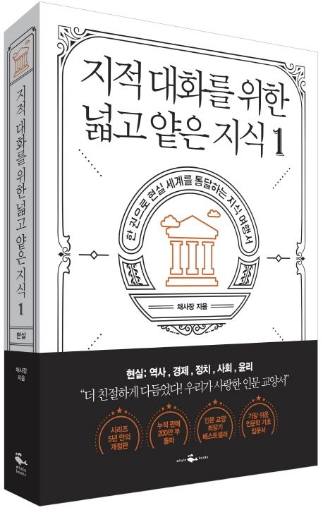

“타인과 지적 대화를 하기 위해서
반드시 깔려 있어야 하는 가장 기본 지식”
우리 시대 대표 인문 교양서 [지대넓얕] 첫 개정증보판
수백만 독자가 읽고 열광하고, 수년간 인문학 필수 도서로 자리 잡은
대표 인문학 시리즈가 옷을 갈아입고 돌아왔다
어렵고 딱딱하던 인문학 분야 판도를 뒤바꾼 책. 출간 즉시 베스트셀러에 오르는 것을 시작으로, 200만 부 누적 판매를 돌파해
더블 밀리언셀러를 기록하며, 장장 5년간 스테디셀러의 자리에서 꿈쩍도 하지 않은 책. 발음하기도 낯설고 어려운 ‘지대넓얕’이라는 말을 유행시키고,
유사 콘셉트의 TV 프로그램까지 탄생시킨 책, 기초 상식에 목말라 있던 보통 사람들이 거리낌 없이 토론하게 하고 뉴스를 주체적으로 보게 하고 선거에서 주관을 갖게 한 책,
80대 독자가 독학을 시작하고 중학생 독자가 인문학을 읽게 하고 직장인들이 독서 모임을 갖게 하는 등 세대 불문 남녀노소 읽을 수 있도록 쉽고 재미있게 쓰였다고 평가받는 책.
이 모든 것이 『지적 대화를 위한 넓고 얕은 지식』에 대한 설명이다.
신간 [제로] 편에 이어, 출간 5년 만에 처음으로 개정증보판이 나왔다. 거칠고 부족했던 부분은 부드럽게 매만지고 채워 넣었다.
낡은 이야기는 시대에 맞게 바꿨다. 작가 채사장이 출간 후 많은 독자와 만나 나누었던 이야기들은 책을 개정하는 데 도움이 되었다.
꼼꼼하게 수선된 개정판을 읽는 순간, 왜 지난 5년간 이 책의 아성이 깨지지 않았는지 확인하게 될 것이다.